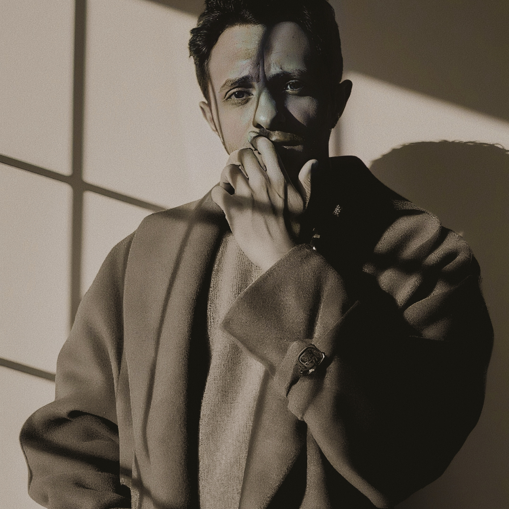

Research
Evaluate models, tools, references, and possibilities.
IBN MAJDI / ALEXANDRIA, EGYPT
A systems-minded creator working across generative AI, visual research, content production, and the practical workflows that connect them.
A CLOSER LOOK ↓
AI video, film visual development, and independent visual experiments.


 BRAND VISUALSAI FILMSEXPERIMENTS
BRAND VISUALSAI FILMSEXPERIMENTS
THE METHOD
AI content creator & visual researcher
years across operations & service
research, creation & workflow design
ACROSS CONTEXTS
THE PROCESS
Structured workflows that bring research, prompting, visual concepts, and production into a usable sequence.
Evaluate models, tools, references, and possibilities.
Build advanced prompting methodologies for exploration.
Shape visual concepts, assets, and content systems.
THE PRACTICE
SERVICES / FOR HIRE
Six professional services, each linked to a real project so you can see exactly what you get. Starting prices below — the final quote depends on scope.
A 15–30 second vertical commercial for your product or brand.
From $150
A short AI film with storyboard, scenes and score.
From $200
Research-led visual direction: references, eras and visual systems.
From $100
Concept and direction for a campaign, from idea to final frames.
From $180
Content built around a story: podcasts, series and campaign planning.
From $120
A repeatable visual system: one product, many scenes, one identity.
From $150
RESEARCH & EXPERIMENTS
Some projects are client-ready work. These are the ones where the question came first — what can this tool actually do, and where does it break?
Tested: can one visual system hold 14 posters from 14 different eras?
Learned: a shared palette, type and framing carry the identity; the era carries the variation.
Tested: how far can AI ad direction go — can one invented car stay recognisable across surreal scenes?
Learned: the storyboard has to be written before generation, not after.
Tested: can a brand promise live without a showroom — furniture floating above Cairo?
Learned: the surreal works when sky, light and scale stay consistent.

THE FOUNDATION
I began in production and supermarket operations, then moved through retail, documentation, hospitality, sales, and customer experience. Each stage made the next one more legible: how people work, how information moves, and how a better system can make both clearer.
Today, that accumulated perspective informs an independent practice in generative AI, visual research, and creative workflow design.
The full record ↗LET'S BUILD SOMETHING TOGETHER
Open to consulting, research, creative partnerships, and AI projects where thoughtful process matters.